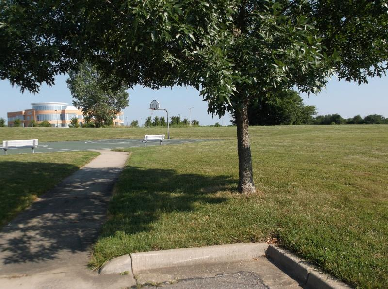

Martin Manley: My Life and Death
Born 8-15-53, Died 8-15-13 , Age 60
- Home Page
- January 1, 2012
- June 11, 2012
- Suicide Preface
- Why Suicide?
- Why not?
- Why Age 60?
- Self-Serving?
- Suicide - How 2
- Gun Control
- Other Suicides
- Other Quotes
- ------------------------------------
- Growing Up
- OMG: I look 60!
- Mom and Dad
- The Heavens
- My Religion
- Chancel Choir
- Victory O Lord
- The Proposal
- Two Marriages
- First Two Loves
- Pictures
- Trips and Travel
- Writing Fiction
- Music & Poetry
- Movies & TV
- Health
- Sleep Deprived
- Living Donor
- Food & Drink
- Creations
- Sports
- KC Star
- KC Tornado
- My IQ
- Synesthesia
- Poker
- Legal
- JOCO, Ks.
- U.S. Financial
- 911 & Conspiracies
- COOL STUFF
- Births & Deaths
SuIcide - How TO
I didn't want to get too gruesome with this, but at the same time if you don’t want to read all about it, I suggest going on to the next category! The simple fact is that, despite the bazillion things I had to think through over the last 14 months, the one that ultimately mattered the most was how to commit suicide.
Just as I have done regarding many other aspects of this, I researched the subject. I discovered organizations which exist solely for the purpose of helping people do the deed - so to speak. I also found a number of sites that actually rated each way to do it. That was, of course, right up (or is it "down"?) my alley.
I evaluated the pros and cons of all the methods. Fortunately, or unfortunately, depending upon your viewpoint, the government makes it hard to get the drugs that would be ideal.
Obviously, many things will kill a human, however many of them take inconsistent amounts of time to "work" and some of them are unpredictable in the results. In fact, some of them might only leave you in a vegetative state. Clearly, that’s unacceptable.
Of course, some methods will be so painful, you will wish you were dead. Oh, wait, that’s the goal. Okay… “you will wish you had never been born.”
Nobody wants to suffer during the process – at least I didn’t. Hanging sucks. Jumping out of a window sucks. Drowning and burning and freezing are even worse. There are 50 ways to die, but very few which are painless, quick and certain.
One of the ways I thought would be as good as any other was to simply take a bottle of sleeping pills (which I had) and then go sit in the car in the garage, start the engine, and go to sleep. And, that might have been the best option if it weren’t for the fact that I had half a duplex. It’s very possible the fumes could escape into their living quarters and harm or kill them. So, instead of suicide as my last execution, it’s murder! Unacceptable.
Probably the best drug to take would be Nembutal, which I believed could be purchased in Mexico. The problem was the risk that it would be either watered down or fake. The bigger problem is that you won’t know if it is "good" until you take it. What if it doesn’t kill you?
In my case, I had everything worked out exactly as I wanted it based upon the calendar. I couldn’t take any chances that something would go wrong. Suppose I sent out a couple dozen personalized letters via Fed Ex overnight on August 14th and then I screw up. “False Alarm... Just Kidding!" That doesn’t cut it in my orderly world!
When push came to shove, there really was only one way to go and that was via a firearm. It’s about as certain to work as you can get. Nobody else needs to be involved. It’s immediate, it’s painless and you can control where you do it.
Of course, even that wasn’t as simple as it might seem – at least not to me. I owned two 22-gauge pistols, but both had mechanical problems. Even if they worked, would a 22 kill me? Very possibly not. So, that meant a higher caliber pistol. I was about to go out and buy one, but coincidentally, one fell into my lap about six weeks before I needed it. I took it out and practiced to make sure I had it figured out... the rest is history.
It’s one thing to plan all of this and to create this site and all the other things I’ve done, but when you actually obtain a gun specifically for that reason, it makes what up to that point was theoretical, into something far more concrete. Even though every single day for 14 months I asked myself whether I was sure I wanted to do it and every single day I said categorically “yes”, it’s still another step to go obtain the pistol that will end my life and even more surreal to pull the trigger knowing the only reason I'm doing it is to make sure I know how to do it one time a few weeks later... a bullet with my name on it.
One of the problems with shooting oneself is the obvious mess. I thought about that a lot. I didn’t want anyone I knew discovering my body and I didn’t want to make a mess in the house – something my sister or my landlord would have to deal with. No way.
I also didn’t want anyone discovering my body or witnessing it who wasn’t trained for such a thing. I finally decided the best way to do it would be at 5AM on August 15, 2013 at the far southeast end of the parking lot at the Overland Park Police Station. If everything worked out right – and I’m sure it did, I called 911 at 5AM. I told them “I want to report a suicide at the south end of the parking lot of the Overland Park Police Station at 123rd and Metcalf. Bang.”

They should find me in about two minutes. I doubt they will be able to identify me for a couple hours at least which will give my sister time to learn about it before the police would have been able to contact her. There will be a note lying next to me which says:
“I committed suicide of my own free will. I am not under the influence of any drugs. I am sorry for your inconvenience! You will be contacted within a matter of hours by my sister. She will find out about this by an overnight letter and/or email I sent to her which she will get this morning. In it, I explain the exact location where I shot myself and gave her your phone number. At that time, she will tell you who I am. If you discover who I am prior to her call, please do not contact her. I do not want her (or anyone else I sent letters to overnight) to find out about it from you. I want them to find out about it from me. Thank you!
In addition, I recently went through a process of donating an organ. Unfortunately, that process could not be completed by this date. PLEASE contact the following people (especially Marilee Clites - the first person on the list) so that they may be able to harvest any organs of mine immediately.
Marilee Clites: Kansas University Medical Center
mclites@kumc.edu, 316-322-5139, 913-945-7755, 816-829-8200
JoAnn Oxman: Kansas University Medical Center
joxman@kumc.edu, 913-558-0266
Melissa Ott: Midwest Transplant Network
mott@mwtn.org, 913-302-7949, 913-261-6164
Catherine Nash: Midwest Transplant Network
cnash@mwtn.org, 816-519-0216, 913-261-6170
I have sent them emails telling them of my death and begging them to actively try to harvest my organs to save another person(s) life. Please cooperate with them if they call. Thank you!
Also, please destroy this gun, ammunition and phone. They serve no further purpose.
And, finally, I’ve prepaid for my cremation from D.W. Newcomer’s, 8201 Metcalf Ave., Overland Park, Ks. 66204 (913-648-6224). The contact is Roger Breckenridge.”
If you are trying to imagine what it was like in the closing minutes - standing there next to a tree in the dark at the corner of a parking lot all by myself with a gun and a bullet... you are worrying too much about what must have been going through my head - no pun intended. I guarantee you from having imagined my way through it a hundred times, the only thing going through my head was asking forgiveness, remembering those whom I love, being glad I was able to end it the way I wanted and thrilled to death that I left this website. Don't weep for me dying alone. We ALL die alone.
In my letter to Barbie I explained where the car is parked as well as how to get into my house and many other things. I sent overnight letters and emails to her home and her work so as to be sure I covered all the bases.
The GPS coordinates for the location are: 38 54.135', -94 40.433' .
"Suicide is the role you write for yourself. You inhabit it and you enact it. All carefully staged -- where they will find you and how they will find you. But one performance only."
― Philip Roth
This is the only method and methodology that would work from my perspective. I prepaid for cremation, however I suspected they would do an autopsy on me to make sure I wasn’t on drugs. As to what Barbie chose to do after that, it was up to her. All I could do is make suggestions which I did.
The act of suicide can be horrible for those left behind. I couldn’t control the fact of the matter, but I could control the circumstances. I believe the way I did it, coupled with the overnight letters/emails and this web site, is the best I can do to mitigate the hurt. And, besides, as I said in other categories on this site, if I was seriously needed by anyone or if I had parents or children, I would never have considered it. As it turns out, my daily freedom from responsibilities gave me the ultimate freedom.
Copyright 2013 Martin Manley Life and Death. All rights reserved.